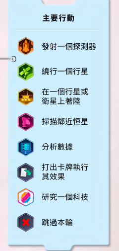
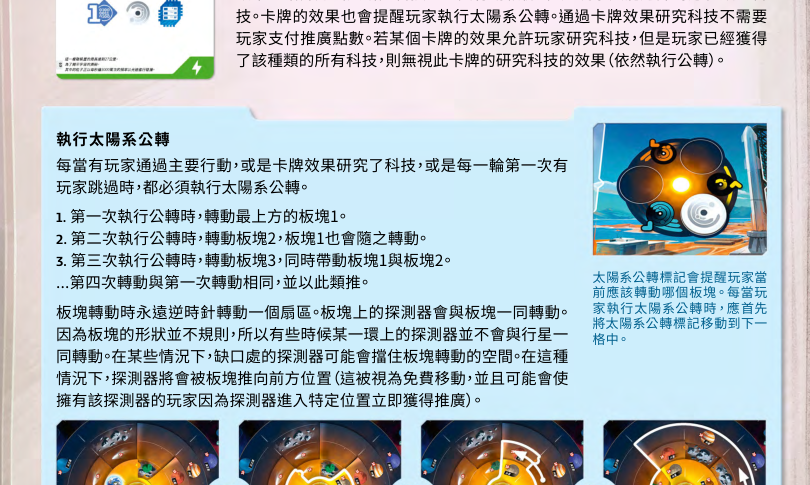
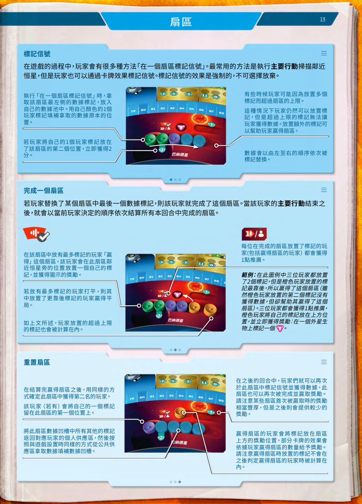
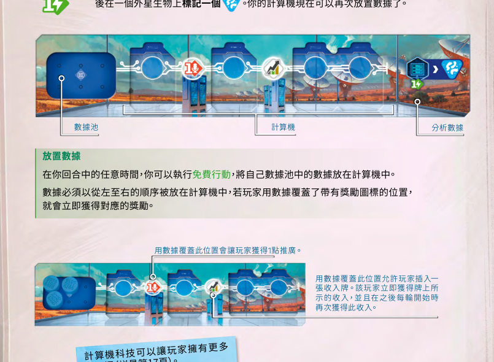

Design Document / Web Board Game Assistant
SETI 网页版桌游开发设计文档
本文基于 rules/SETI规则摘要_自动化设计.md 和当前网页原型，规划一个从“太阳系随机盘”逐步扩展为“规则辅助型网页版桌游”的开发方案。重点覆盖模块划分、功能架构、规则引擎、状态模型、交互页面和分阶段落地路线。

1. 项目结论
SETI 的规则核心不是单纯的棋盘移动，而是“行动选择、卡牌多用途、扇区争夺、数据分析、外星生物插件、里程碑触发”共同组成的事件系统。最稳妥的路线是先把游戏状态、合法性校验和自动结算做正确，再逐步增加可视化棋盘、卡牌效果和策略提示。
纯规则引擎 + 可回放事件日志，而不是把所有逻辑散落在 DOM 操作里。
玩家选择行动，系统检查资源与条件，自动扣费、给奖励并输出日志。
卡牌效果、科技板块、外星生物、扇区完成后的平手与重置规则。
状态集中、规则纯函数、UI 订阅状态、内容数据化、特殊规则插件化。
核心设计判断
- 当前项目已有的随机盘适合成为“设置阶段”和“太阳系可视化”的起点，但不能承载完整规则状态。
- 应把所有行动抽象为
Action，所有结算结果抽象为GameEvent，让 UI、存档、复盘和测试都围绕同一条事件链工作。 - 卡牌和外星生物不宜硬编码在主引擎中，应该用 JSON 配置和插件模块表达特殊效果。
- MVP 不追求图形化还原整套实体桌游，优先追求“少出错、能回退、能解释每一步为什么合法或非法”。
2. 现状分析
当前根目录网页由 index.html、style.css 和 main.js 组成，功能集中在四层太阳系转盘的随机旋转和四个扇区素材的随机分配。它是一个轻量、纯前端、无构建工具的静态页面。
| 文件/目录 | 当前职责 | 可复用价值 | 主要缺口 |
|---|---|---|---|
index.html |
提供随机盘页面骨架：标题、四层转盘、扇区挂载点、随机按钮。 | 可作为后续 SetupView 或 SolarSystemView 的视觉基础。 |
没有玩家、回合、行动、规则状态和可访问的操作面板。 |
main.js |
随机转盘角度、洗牌扇区、响应窗口尺寸。 | 可改造成 setup/randomizer 模块，输出初始棋盘布局。 |
当前直接操作 DOM，没有状态存储、事件日志和可测试的业务接口。 |
style.css |
通过位图素材实现页面背景、转盘、按钮和扇区贴图布局。 | 资产定位经验可复用，适合继续打磨棋盘视觉层。 | 缺少响应式操作区域、玩家面板、弹层、表单和日志样式。 |
assets/ |
保存太阳系、按钮、背景、扇区等图片素材。 | 可作为美术资源库，后续扩展为图标、卡牌和棋盘贴图。 | 缺少资源清单、命名规范、尺寸说明和加载失败兜底。 |
graph_tool/ |
独立图片布局工具，支持上传、拖拽、缩放、旋转和导出。 | 适合用于校准棋盘图层、生成布局配置或辅助切图。 | 尚未与主页面的数据结构和布局配置打通。 |
如果继续在 main.js 中堆叠规则逻辑，后续会很快遇到“状态不可追踪、规则难测试、回退困难、特殊卡牌互相污染”的问题。下一步应先拆出状态与规则层，再让页面读取状态渲染。
3. 产品范围
该网页版桌游建议按“规则辅助型热座应用”定义，而不是首版就做完整联网对战或 AI 全自动代打。玩家仍然进行实体或网页上的决策，系统负责记录、校验、结算和解释。
- 2 到 4 名玩家创建、颜色选择、起始资源录入。
- 5 轮流程、当前玩家、跳过状态和起始玩家传递。
- 八类主要行动和常见免费行动的合法性检查。
- 资源、分数、推广、数据池、计算机、模型位置和科技状态记录。
- 扫描、扇区完成、分析数据、着陆、里程碑、收入和维持阶段自动结算。
- 事件日志、撤销上一步、导入导出存档。
- 完整复刻所有卡牌的复杂自然语言效果。
- 联网实时多人同步和账号系统。
- 完全自动 AI 玩家。
- 规则书扫描识别、图片 OCR 或实体桌面视觉识别。
- 商业发布所需的版权素材分发能力。
- 所有外星生物高级特例一次性全部完成。
用户角色
4. 功能架构
建议采用“UI 表现层、应用服务层、规则领域层、内容数据层、基础设施层”的分层架构。规则领域层必须尽量保持无 DOM、无浏览器副作用，方便单元测试和后续迁移。
运行时数据流
5. 模块划分
模块边界建议围绕规则摘要中的高频状态变化来划分。每个模块都应提供三类能力：查询当前状态、校验行动、产生结算事件。
负责玩家创建、随机太阳系、抽取外星生物、初始化卡牌供给、轮结束牌和科技板块。
保存唯一可信的 GameState，提供快照、撤销、重做和事件回放。
管理当前玩家、主要行动次数、免费行动时机、跳过状态、轮次维持和游戏结束。
处理信用点、能量、推广、分数、手牌、数据池上限和收入卡立即收益。
处理探测器发射、移动力、太阳禁入、小行星额外消耗、到达星球触发和公转。
处理绕行、着陆、人造卫星、着陆器、首位奖励和行星/卫星占用限制。
处理扫描标记、获取数据、第二格 2 分、完成扇区、赢家判定、第二名保留标记和扇区重置。
处理数据池、计算机槽位、覆盖奖励、分析数据、生命迹象放置和数据弃置。
处理卡牌多用途、打出项目、免费弃牌效果、收入插入、任务完成和游戏结束计分牌。
处理 6 推广支付、研究前公转、科技堆首拿奖励、科技能力注册和一次性奖励。
以插件形式处理 5 种外星生物的发现设置、生命迹象响应和终局计分。
处理分数变化、金色里程碑、中立里程碑、最终计分和胜负排名。
模块协作契约
| 接口 | 输入 | 输出 | 设计要求 |
|---|---|---|---|
canApply(action, state) |
行动命令、当前状态。 | ValidationResult，含是否合法、错误码、错误说明和可选修复提示。 |
只读，不修改状态。所有按钮可用性都应来自它。 |
apply(action, state) |
已通过校验的行动命令和状态快照。 | 新状态、事件列表、待玩家选择的 pending prompt。 | 纯函数优先。任何随机结果要作为 action payload 传入，方便回放。 |
emit(event, state) |
领域事件，如 onSectorCompleted。 |
后续派生事件和状态补丁。 | 用于连锁结算，但必须避免无限递归。 |
explain(action, result) |
行动和结算结果。 | 中文日志文本。 | 日志用于玩家确认、调试、复盘和导出战报。 |
6. 规则引擎设计
规则引擎应围绕“行动命令”和“领域事件”实现。行动代表玩家主动选择，事件代表系统自动结算。这样可以清晰区分“玩家做了什么”和“规则因此发生了什么”。
行动类型
type MainActionType =
| "launch_probe"
| "orbit_planet"
| "land_on_planet_or_moon"
| "scan_nearby_star"
| "analyze_data"
| "play_card"
| "research_tech"
| "pass_round";
type FreeActionType =
| "move_probe"
| "place_data_to_computer"
| "discard_card_for_free_effect"
| "convert_resources"
| "buy_card_with_publicity"
| "complete_mission"
| "insert_income_card";事件类型
type GameEventType =
| "resource_paid"
| "resource_gained"
| "probe_moved"
| "signal_marked"
| "sector_completed"
| "sector_resolved"
| "data_placed"
| "life_sign_placed"
| "alien_discovered"
| "score_changed"
| "milestone_pending"
| "tech_researched"
| "round_passed"
| "round_ended";待玩家选择机制
有些规则无法自动完成，例如到达 25/50/70 分后选择金色里程碑、跳过时选择轮结束牌、研究科技时选择科技板块、卡牌效果提供多个奖励选项。这类情况不应让 Reducer 直接猜测，而是生成 PendingChoice。
interface PendingChoice {
id: string;
playerId: string;
type:
| "choose_gold_milestone"
| "choose_end_round_card"
| "choose_tech_tile"
| "choose_card_effect_option"
| "choose_life_sign_target";
options: ChoiceOption[];
sourceEventId: string;
}合法性检查重点
| 规则点 | 检查内容 | 错误提示示例 |
|---|---|---|
| 主要行动 | 当前玩家本回合是否已经执行过主要行动，是否已经跳过。 | “蓝色玩家本轮已跳过，不能再执行行动。” |
| 资源支付 | 信用点、能量、推广是否足够，推广是否超过上限。 | “扫描需要 2 能量，当前只有 1 能量。” |
| 探测器数量 | 太空中探测器是否低于上限，卫星/着陆器不计入太空探测器。 | “当前已有 1 个太空探测器，尚未获得增加上限的科技。” |
| 移动路径 | 不能经过太阳，离开小行星需额外移动力，路径是否连续。 | “移动路径经过太阳，行动非法。” |
| 扇区完成 | 标记是否替换数据，是否进入溢出标记，是否触发完成判定。 | “该扇区没有可替换的数据，本次只能作为额外标记。” |
| 计算机分析 | 上方行槽位是否填满，是否有足够能量支付分析费用。 | “计算机上方行尚未填满，不能分析数据。” |
| 研究科技 | 是否有 6 推广、目标科技未拥有、是否先执行公转。 | “已拥有该类型科技板块，不能重复取得同一块。” |
| 卡牌用途 | 同一张牌一次只能选择一种用途，费用和区域是否符合。 | “该牌已经作为收入牌插入，不能再作为免费行动弃置。” |
7. 数据模型
数据模型应优先表达规则关系，而不是 UI 位置。棋盘坐标、图片偏移和动画状态应放在视图配置中，避免污染核心规则状态。
核心状态
interface GameState {
gameId: string;
status: "setup" | "playing" | "pending_choice" | "finished";
round: 1 | 2 | 3 | 4 | 5;
currentPlayerId: PlayerId;
startPlayerId: PlayerId;
players: Record<PlayerId, PlayerState>;
solarSystem: SolarSystemState;
planetBoard: PlanetBoardState;
sectors: Record<SectorId, SectorState>;
cardDeck: DeckState;
cardMarket: CardId[];
discardPile: CardId[];
techBoard: TechBoardState;
aliens: AlienState[];
milestones: MilestoneState;
pendingChoices: PendingChoice[];
eventLog: GameEvent[];
}玩家状态
interface PlayerState {
id: PlayerId;
name: string;
color: "red" | "blue" | "green" | "yellow";
score: number;
publicity: number;
credits: number;
energy: number;
hand: CardId[];
incomeCards: CardId[];
dataPool: DataToken[];
computer: ComputerState;
probeLimit: number;
spaceProbes: ProbeState[];
satellites: ModelOnPlanet[];
landers: ModelOnPlanet[];
techs: TechTileId[];
completedMissions: CardId[];
endGameScoringCards: CardId[];
passedThisRound: boolean;
mainActionUsedThisTurn: boolean;
}卡牌配置
interface CardDefinition {
id: CardId;
name: string;
type: "project" | "mission" | "end_scoring" | "income";
sectorColor?: SectorColor;
freeEffect?: EffectDefinition;
mainCost?: CostDefinition;
mainEffect?: EffectDefinition;
incomeReward?: RewardDefinition;
missionCondition?: PredicateDefinition;
endGameScoring?: ScoringDefinition;
}外星生物插件
interface AlienModule {
id: AlienId;
displayName: string;
setup?(state: GameState): GameState;
onDiscovered(event: GameEvent, state: GameState): GameState;
onLifeSignPlaced?(event: GameEvent, state: GameState): GameState;
onTurnEnd?(playerId: PlayerId, state: GameState): GameState;
endGameScoring?(state: GameState): ScoreDelta[];
}状态里保存 ID，定义表里保存规则内容，视图层保存坐标和素材。这样卡牌文本、规则结算和棋盘渲染可以独立迭代，测试也更容易构造最小状态。
8. 页面与交互设计
UI 不应只是棋盘图片，必须把“下一步可做什么、为什么不能做、刚才结算了什么”清楚地呈现出来。对于规则复杂桌游，解释性比华丽动画更重要。
玩家人数、玩家颜色、随机太阳系、抽取外星生物、初始卡牌和科技板块配置。现有随机盘功能应迁入这里。
显示太阳系、行星版图、扇区、数据、科技和外星生物发现状态。支持点击目标位置发起行动。
显示当前玩家资源、分数、推广、数据池、计算机、手牌数、收入牌、任务和模型摘要。
按主要行动和免费行动分组，按钮状态由 canApply 驱动，非法行动显示具体原因。
处理里程碑、轮结束牌、科技板块、卡牌分支奖励等 PendingChoice。
按轮次和玩家记录所有支付、奖励、扇区结算、生命迹象和里程碑触发，支持撤销上一步。
显示供给区、弃牌、手牌用途。首版可先用结构化文本，后续再接入卡牌图片。
显示当前 GameState JSON、校验结果、事件链和规则模块输出，开发阶段非常有用。
游戏结束后汇总过程分、终局牌、金色里程碑、外星生物和排名。
信息密度建议
- 主棋盘保持视觉沉浸，但操作按钮不要藏在棋盘角落，行动面板应始终可见。
- 所有资源数字旁边提供本回合变化提示，例如
能量 4 - 2 = 2。 - 非法行动不要只禁用按钮，应提供悬浮或面板提示，说明缺少什么条件。
- 每次自动结算都写入日志，玩家可以在确认后继续，也可以撤销上一条行动。
- 移动、扫描、分析这类多参数行动应使用分步面板，减少一次性表单的压力。



9. 关键规则流程
9.1 扫描邻近恒星
9.2 扇区完成判定
function resolveSector(sector: SectorState): SectorResolution {
const participants = collectParticipants(sector.markers, sector.overflowMarkers);
const counts = countMarkersByPlayer(sector.markers, sector.overflowMarkers);
const winner = breakTieByFarthestPosition(counts, sector.markers, sector.overflowMarkers);
const runnerUp = findRunnerUpAfterWinner(counts, sector.markers, sector.overflowMarkers);
return {
winner,
runnerUp,
participants,
rewards: buildSectorRewards(sector, winner, participants),
resetPlan: buildSectorResetPlan(sector, winner, runnerUp),
};
}9.3 分析数据与外星生物发现
9.4 研究科技
- 玩家选择研究科技，系统检查推广是否至少 6。
- 规则引擎先执行一次太阳系公转，并写入
solar_rotation_applied事件。 - 扣除 6 推广，展示可选择科技板块。
- 玩家确认科技后，获得科技板块和一次性奖励。
- 若是该科技堆首位玩家，额外获得 2 分奖励。
- 注册科技能力，使后续移动、扫描、着陆或计算机规则读取到能力加成。
9.5 跳过和轮次维持
- 玩家执行
pass_round作为主要行动。 - 若手牌超过 4 张，生成弃牌选择。
- 若是本轮第一位跳过的玩家，立即执行太阳系公转。
- 玩家从本轮结束牌中选择 1 张。
- 若所有玩家都已跳过，进入
onRoundEnd。 - 所有玩家获得收入，起始玩家传递，公转标记移动到下一叠轮结束牌。
10. 工程目录建议
当前项目没有构建工具，适合先保持静态网页形态，逐步拆成 ES Module。等规则层稳定后，再决定是否迁移到 Vite、React、Svelte 或纯 Web Components。
seti/
index.html
style.css
main.js
docs/
seti-web-boardgame-design.html
assets/
core/
optional/
data/
cards.json
tech_tiles.json
planets.json
sectors.json
setup_presets.json
aliens/
alien_sulfurites.json
alien_drillers.json
src/
app/
game-controller.js
action-dispatcher.js
persistence.js
undo-redo.js
engine/
state.js
actions.js
validation.js
reducer.js
events.js
scoring.js
rules/
resources.js
turn.js
movement.js
planet.js
sector.js
computer.js
cards.js
tech.js
milestones.js
aliens.js
ui/
setup-view.js
board-view.js
player-panel.js
action-panel.js
event-log.js
choice-modal.js
tests/
movement.test.js
sector.test.js
computer.test.js
turn.test.js
graph_tool/
index.html
app.js
styles.css现有代码迁移建议
| 当前代码 | 迁移后位置 | 处理方式 |
|---|---|---|
randomWheelSteps |
src/rules/movement.js 或 src/app/setup-randomizer.js |
让函数返回布局数据，而不是直接旋转 DOM。 |
randomizeSectors |
src/app/setup-randomizer.js |
输出 sectorAssignment，并写入 GameState.setup。 |
renderSector |
src/ui/board-view.js |
改为根据状态渲染，不自行决定随机结果。 |
resize |
src/ui/layout.js |
保留响应式棋盘尺寸逻辑，同时为侧栏和底部行动面板预留空间。 |
graph_tool |
保持独立工具或封装为开发页 | 用于生成棋盘图层配置 JSON，减少手调 CSS 偏移。 |
11. 测试策略
规则辅助器最怕“看起来能点，但结算错了”。测试应优先覆盖纯规则层，每个复杂规则都准备最小状态和期望事件。
覆盖资源支付、移动路径、扇区完成、分析数据、跳过、收入、里程碑、终局计分。
对一串行动回放后比较最终 GameState，防止规则重构引入回归。
复现规则摘要中的示例日志：扫描触发扇区完成、赢家获奖励、跨 25 分触发里程碑。
首批测试用例
| 用例 | 输入状态 | 期望结果 |
|---|---|---|
| 发射探测器 | 玩家有 2 信用点，太空中无探测器。 | 扣 2 信用点，地球位置新增探测器。 |
| 探测器上限 | 玩家已有 1 个太空探测器，无增加上限科技。 | launch_probe 非法。 |
| 离开小行星 | 路径从小行星出发，玩家只支付普通移动力。 | 移动非法或提示额外需要 1 移动力。 |
| 扇区第二格 | 标记放在扇区第 2 个位置。 | 获得数据并立即加 2 分。 |
| 扇区平手 | 两名玩家标记数量相同，但一方位置更靠后。 | 靠后标记所属玩家赢得扇区。 |
| 研究科技 | 玩家有 6 推广，选择未拥有科技。 | 先公转，再扣推广，获得科技与奖励。 |
| 第一位跳过 | 本轮无人跳过，当前玩家执行跳过。 | 执行太阳系公转并生成轮结束牌选择。 |
| 数据池上限 | 数据池已有 6 个数据，再通过扫描获得数据。 | 新增数据弃置，日志说明数据池已满。 |
12. 迭代路线
建立 GameState、玩家面板、资源调整、行动日志、导入导出。现有随机盘作为设置工具保留。目标是让玩家能完整记录一局游戏。
实现资源支付、发射、移动、绕行、着陆、扫描、扇区完成、数据分析、跳过和轮次维持。卡牌先只记录用途，不完全自动执行复杂效果。
建立 cards.json 和 tech_tiles.json，实现常见效果 DSL。让项目牌、收入牌、任务牌和终局牌逐步进入自动结算。
为每种外星生物建立插件模块，只把通用生命迹象和发现流程放在主引擎。特殊规则通过事件钩子接入。
基于事件日志和状态快照，提供可执行行动列表、收益预估、跳过建议、扇区争夺提示和简单启发式模拟。
优化棋盘交互、动画、移动路径预览、卡牌视图、终局计分页和战报导出。此时再考虑联网同步或 AI 玩家。
MVP 验收标准
- 可以创建一局 2 到 4 人游戏，并完成 5 轮流程。
- 每个玩家的资源、分数、推广、数据、科技、模型和跳过状态可见。
- 至少支持发射、移动、绕行、着陆、扫描、分析、研究科技、跳过八类主要行动的基础校验。
- 扫描系统能自动处理数据获取、第二格加分、扇区完成、赢家判定和重置。
- 所有自动结算都有中文事件日志，并支持撤销上一步。
- 刷新页面后可从本地存储或导入文件恢复游戏。